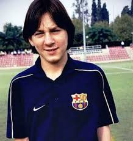
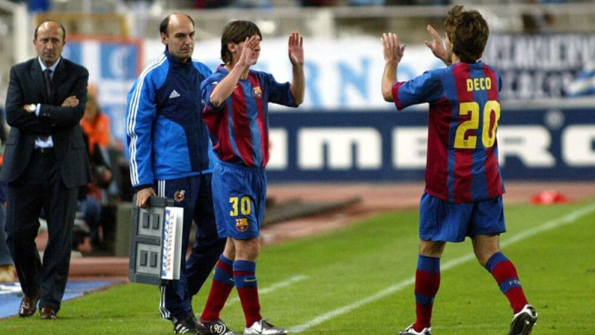

1. Los primeros pasos de Messi en Newell’s
Lionel Andrés Messi dio sus primeros pasos como futbolista en Newell’s Old Boys, su club de infancia en Rosario, Argentina. Desde muy pequeño, mostró una habilidad excepcional con el balón en los pies. Su apodo era "La Pulga" y ya dejaba atónitos a los que lo veían jugar en las divisiones infantiles.

2. Llegada de Messi a la MASIA del FCB
Con solo 13 años, Messi llegó a Barcelona para unirse a La Masia, la famosa cantera del FC Barcelona. Fue una apuesta arriesgada del club catalán, que además cubrió su tratamiento hormonal. Allí se formó no solo como jugador, sino también como persona.
3. Debut de Messi en el Barça contra el Espanyol
El 16 de octubre de 2004, con solo 17 años, Lionel Messi hizo su debut oficial con el primer equipo del FC Barcelona frente al RCD Espanyol. Aquel día comenzaba una nueva era para el club y para el fútbol mundial.
